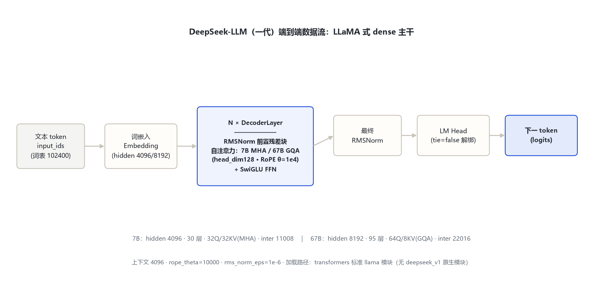
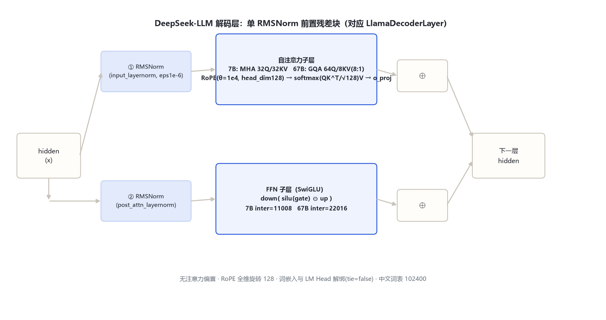

本页以 远端官方 config.json（2026-10-31 经 hf-mirror 拉取留档）、官方论文（DeepSeek LLM: Scaling Open-Source Language Models with Longtermism，arXiv:2401.02954）与 transformers 源码（E:\transformers\src\transformers\models\llama\，标准 llama 模块加载）为依据。一代两档均为标准 LLaMA 式 dense Transformer，差异集中在层数、宽度与 KV 头分组。
| 字段 | 7B-base | 67B-base | 来源 |
|---|---|---|---|
| architectures / model_type | LlamaForCausalLM / llama | LlamaForCausalLM / llama | 远端官方 config |
| hidden_size | 4096 | 8192 | 远端官方 config |
| num_hidden_layers | 30 | 95 | 远端官方 config |
| Q heads / KV heads | 32 / 32（MHA） | 64 / 8（GQA，8:1） | 远端官方 config |
| intermediate_size | 11008 | 22016 | 远端官方 config |
| vocab_size | 102400 | 102400 | 远端官方 config |
| max_position_embeddings | 4096 | 4096 | 远端官方 config |
| rope_theta / rms_norm_eps | 10000 / 1e-6 | 10000 / 1e-6 | 远端官方 config |
| hidden_act / tie_word_embeddings | silu / false | silu / false | 远端官方 config |
| 注意力偏置 / QK 偏置 | attention_bias=false · attn_logit_softcapping 无 | 同左 | 远端官方 config |
图：两档 config 实测维度（7B vs 67B）。QK head_dim=128 两档一致；67B 用 8 个 KV 头服务 64 个 Q 头（GQA 8:1），是 V2 MLA 的前置探索。
文本 token（词表 102400）→ 词嵌入（hidden 4096 / 8192，tie=false 与 LM Head 解绑）→ N × DecoderLayer（单 RMSNorm 前置残差块：自注意力 + SwiGLU FFN）→ 最终 RMSNorm → LM Head → 下一 token logits。两档均无注意力偏置。

图 1：DeepSeek-LLM 端到端数据流（LLaMA 式 dense 主干）。7B：30 层 · 4096 · MHA；67B：95 层 · 8192 · GQA。
单 RMSNorm 前置残差块（对应 LlamaDecoderLayer）：

图 2：解码层与核心机制。RMSNorm eps=1e-6；RoPE 施加于 Q/K 全部 128 维头维度。
要点：一代全部为 dense 结构，无 MoE、无潜在压缩、无辅助损失；67B 的 GQA 是为后续 V2 MLA 做的 KV 侧分组铺垫。
| 维度 | 7B（MHA） | 67B（GQA） | 来源 |
|---|---|---|---|
| Q 头数 | 32 | 64 | config |
| KV 头数 | 32（每 Q 头独立 KV） | 8（8 个 Q 头共享一组 KV） | config |
| head_dim | 128 | 128 | 复算 hidden/heads |
| 缩放因子 | 1/sqrt(128) | 1/sqrt(128) | 标准 softmax(QKᵀ/√d)V |
| 注意力偏置 | 无 | 无 | config（默认 false） |
GQA 分组比 8:1：64 个 Q 头分成 8 组，每组共享同一份 K/V，显著降低 67B 推理 KV cache。
| token | ID | 含义 | 来源 |
|---|---|---|---|
| bos_token_id | 1 | 序列开始 | 远端官方 config |
| eos_token_id | 2 | 序列结束 | 远端官方 config |
| pad_token | 待确认 | 官方 tokenizer_config 未显式设置独立值 | 远端官方 tokenizer_config |
| vocab_size | 102400 | 中英双语 BPE，面向中文语料扩表 | 远端官方 config / 论文 |
| 维度 | LLaMA-2（基线） | DeepSeek-LLM 7B/67B | 说明 |
|---|---|---|---|
| 主干 | RMSNorm+SwiGLU+RoPE | 相同（config 实证 model_type=llama） | 架构完全沿用 |
| 注意力 | 全系 MHA（70B 亦 MHA） | 7B MHA · 67B GQA（8KV） | 67B 首次引入 GQA |
| 词表 | 32000 | 102400（中英双语） | 面向双语扩表 |
| 上下文 | 4096 | 4096（RoPE θ=1e4，无外推） | 相同 |
| 训练量 | 2T（7B/13B/70B） | 2T token 预训练 + SFT/DPO | 官方论文口径 |
| 定位 | 英语为主 | 中英双语 · Longtermism scaling 研究 | 论文主题 |
相邻代引用：下一代 DeepSeek-V2（236B-A21B）引入 MLA + DeepSeekMoE、上下文扩到 163840（数字引自 V2 官方 config，见 deepseek_v2 目录）；再下一代 V3/R1（671B-A37B、无辅助损失负载均衡）只引用官方来源，不在本目录展开。